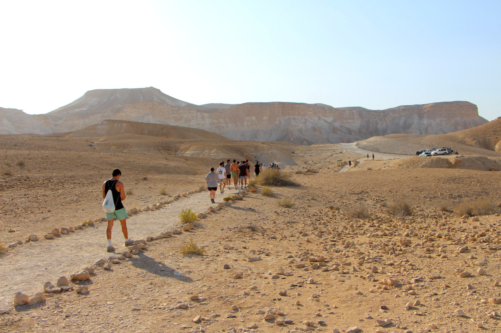
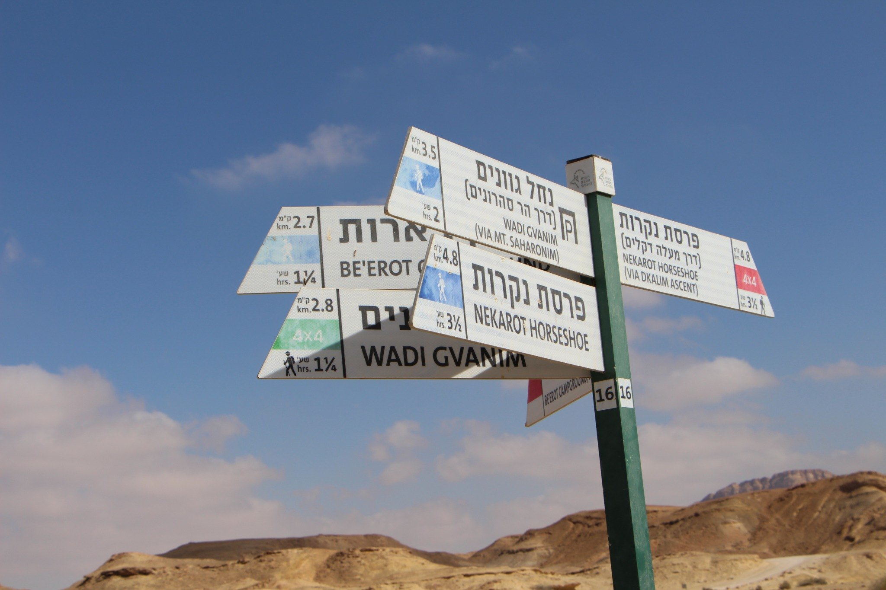
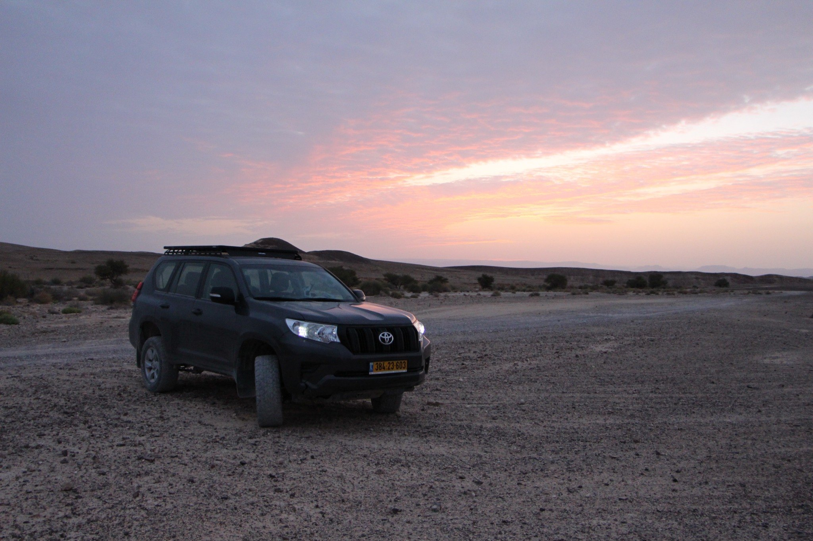
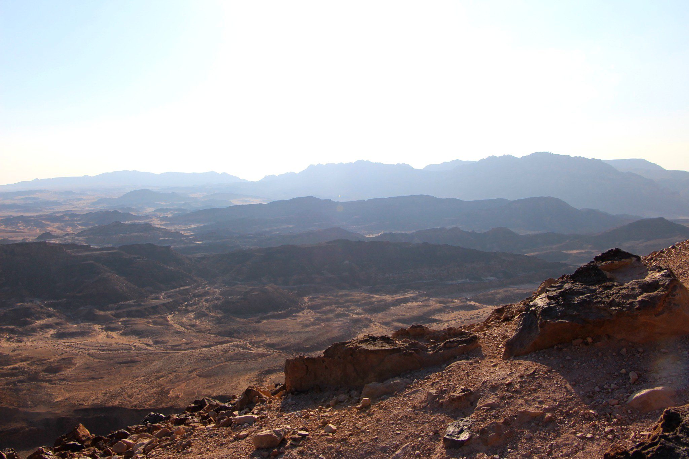
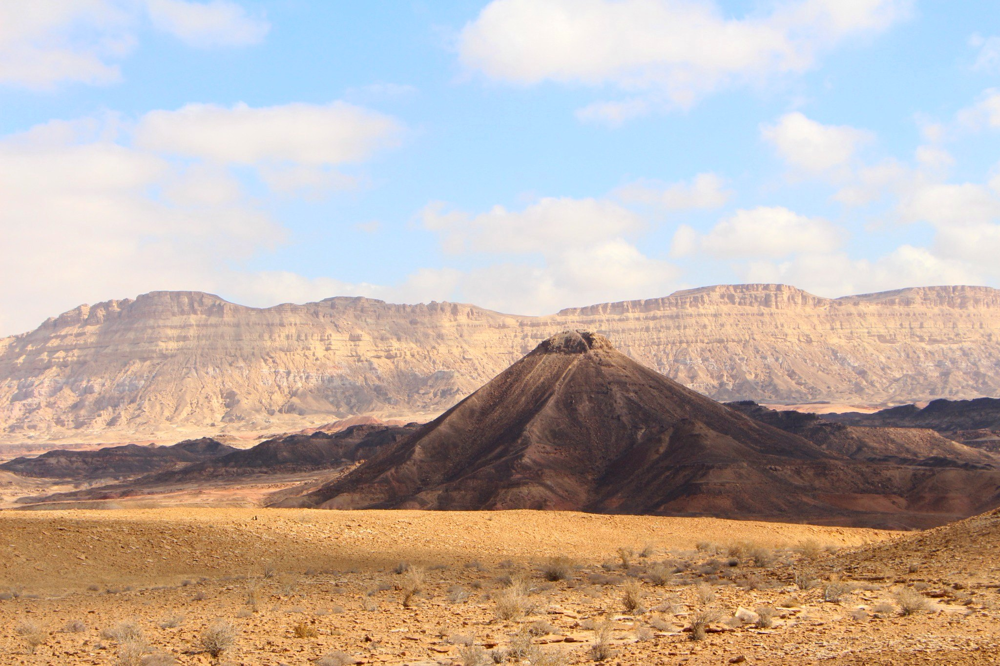
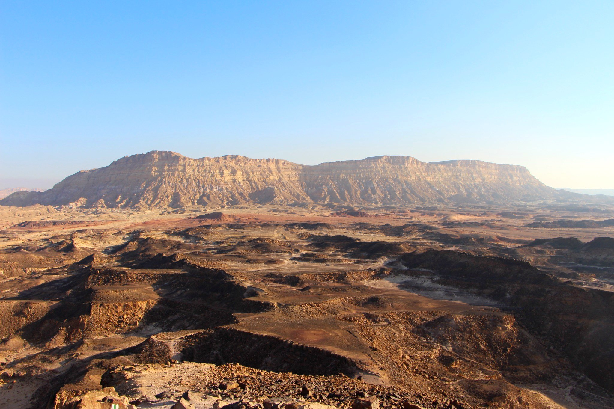

הקפצות, הקפצת ציוד ושירותי לוגיסטיקה למטיילים במקטעי שביל ישראל בדרום.
פתרונות לוגיסטיים פשוטים למי שמטייל בשביל ישראל ובמסלולי המדבר בדרום.
הקפצה למקטעים שונים בשביל ישראל – בזמן, בנוחות ובתיאום מראש.
למידע נוסף ›מקפיצן אישי לאורך השביל לפי אזור, נקודת התחלה וסיום וקצב הטיול שלכם.
למידע נוסף ›הובלת ציוד לנקודות הלינה או לנקודות מוסכמות באופן בטוח ואמין.
למידע נוסף ›תכנון ותיאום הצד הלוגיסטי כדי שתוכלו להתרכז במסע ולהינות מהטבע.
למידע נוסף ›מקטעי המדבר של שביל ישראל – מהמכתש הקטן, דרך הרמון ובקעת צין ועד הערבה.



במקטעי הדרום של שביל ישראל, הלוגיסטיקה מסביב היא חלק משמעותי מהטיול עצמו: איך מגיעים לנקודת ההתחלה, איך חוזרים מחניון הלילה שבעומק השטח ואיך מתנהלים עם כמות הציוד והמים, בשביל זה בדיוק הקמנו את השירות הזה .



שלחו הודעה עם נקודת התחלה, נקודת סיום, תאריך ומספר מטיילים.
שלחו הודעה ב־WhatsApp התקשרו עכשיו